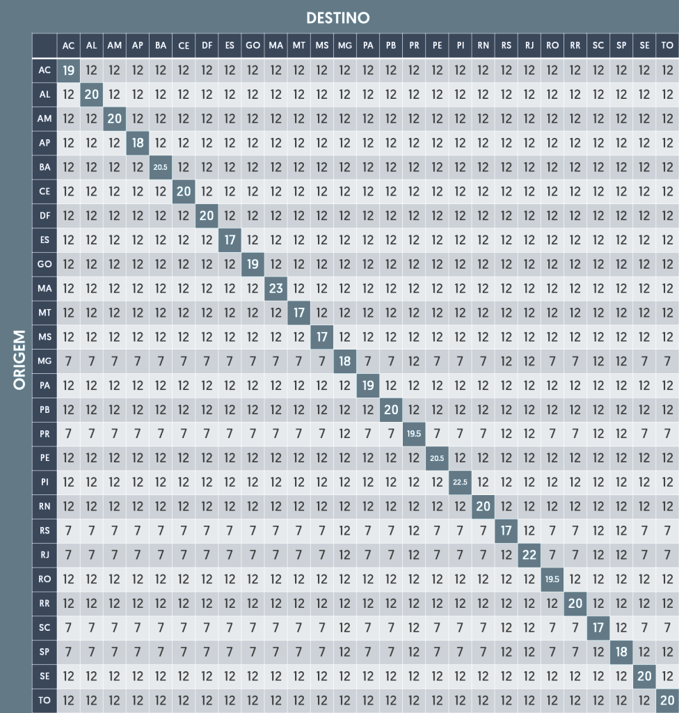

O DIFAL (Diferencial de Alíquota do ICMS) é um imposto aplicado quando uma mercadoria é vendida de um estado para outro.
Nas operações destinadas a não contribuintes (pessoas físicas), a responsabilidade de recolher o DIFAL é da empresa vendedora. Já em operações entre empresas (contribuintes), o comprador costuma ser o responsável.
O diferencial de alíquota ocorre em operações interestaduais destinadas a consumidor final.
Considera a diferença entre a alíquota interna do destino e a alíquota interestadual (4%, 7% ou 12%).
Alguns estados aplicam o Fundo de Combate à Pobreza, um adicional de até 2% sobre a alíquota interna em produtos específicos. Fique atento se o estado de destino exige este adicional!
Consulte as alíquotas interestaduais na tabela de referência abaixo:

Se você já reparou que o valor da base de cálculo no resultado é maior do que o valor do produto que você digitou, você encontrou a famosa Base Dupla. Esse método, também conhecido como "gross-up", é uma exigência legal em diversos estados brasileiros para o cálculo do DIFAL.
No Brasil, o ICMS é um imposto que incide sobre si mesmo. Isso significa que o valor do imposto faz parte da sua própria base de cálculo. Quando usamos a Base Dupla, o objetivo é "recompor" o valor da operação como se a alíquota interna do estado de destino já estivesse embutida no preço desde o início.
Para que o estado de destino receba a carga tributária correta, a lei exige que a base de cálculo seja ajustada. A lógica é que o preço final da mercadoria deve conter o ICMS interno do destino. Por isso, aplicamos uma fórmula matemática para "inflar" a base original antes de calcular a diferença entre as alíquotas.
Para chegar ao valor que você vê na calculadora, utilizamos a seguinte estrutura:
* Onde o ICMS de origem é o valor do produto multiplicado pela alíquota interestadual (4%, 7% ou 12%).
A aplicação da base dupla varia conforme o estado (UF) de destino e a categoria do comprador (se é contribuinte do ICMS ou não). Estados como Minas Gerais (MG) e Rio Grande do Sul (RS) são conhecidos por serem rigorosos na exigência desse formato de cálculo para equilibrar a arrecadação interna.
Utilize nossa calculadora DIFAL ICMS online gratuita para calcular o diferencial de alíquota em operações interestaduais de forma rápida e prática. Informe o valor da operação, estado de origem e destino para obter automaticamente o valor do DIFAL, ICMS interestadual e ICMS interno.
O cálculo do DIFAL (Diferencial de Alíquota do ICMS) corresponde à diferença entre a alíquota interna do estado de destino e a alíquota interestadual aplicada na operação. Nossa ferramenta realiza esse cálculo automaticamente, considerando também situações com base dupla (ICMS por dentro) e a incidência do FCP (Fundo de Combate à Pobreza).
A calculadora deve ser utilizada em operações interestaduais destinadas a consumidor final, tanto para contribuintes quanto não contribuintes do ICMS. É especialmente útil para empresas que realizam vendas entre estados e precisam estimar o valor do imposto de forma rápida.
Explore outras calculadoras úteis e novas ferramentas.
Simule o crescimento do seu dinheiro ao longo do tempo.
Abrir calculadora → CLICA AQUI HORAS - EM BREVECalcule suas horas para não se atrasar
Abrir calculadora → CLICA AQUI EM ANALISEEstudando novas funcionalidade e calculadora caso queira dar uma sujestão
icone no canto inferior direito para sujestão